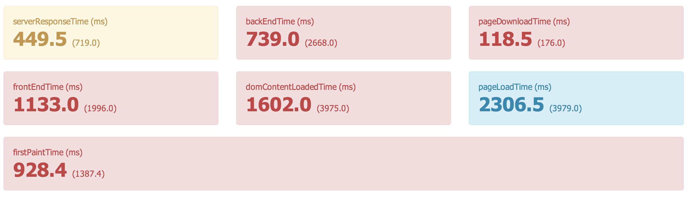
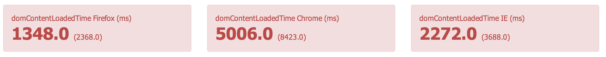
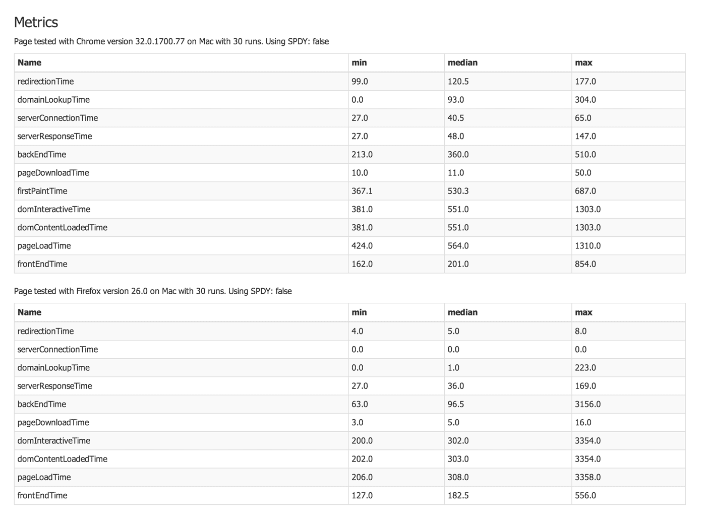

The brand new thing is that you can test with multiple browsers with one run! Before I show you, there's one really IMPORTANT thing: the parameters have changed when you collect metrics, you choose which browser with the c parameter and the z decides how many runs per page (three is still the default value). It looks like this ( test the URL ten times with Chrome):
$ ./bin/sitespeed.io -u https://www.sitespeed.io -c chrome -z 10
If you want to test with multiple browsers, you add each browser separated with a comma:
$ ./bin/sitespeed.io -u https://www.sitespeed.io -c firefox,chrome
Then you will get timings from both the browsers, by default fetching each URL three times. On the summary page, the summaries will be for both Firefox & Chrome:
All the summary timings will be named with the browser name at the end of the name. To get domContentLoadedTime for Firefox, you configure to fetch domContentLoadedTimeFirefox. Here's an exampe running on Windows, only showing domContentLoadedTime for each browser:
$ bin/sitespeed.io -u https://www.sitespeed.io -c firefox,chrome,ie -b domContentLoadedTimeFirefox,domContentLoadedTimeChrome,domContentLoadedTimeIE
And the summary will then look something like this:
On the details page, you will see the data for each browser:
If you are using the Jenkins plugin, you need to upgrade it to the new beta 7 version to be able to get all the browser metrics into Graphite. The summary metrics will look the same except that you will have an extra level per browser.
See all the changes done in this release.